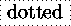

Xy-pic User's Guide 


* is reserved for this: in its
simplest form *{math} will typeset the math
material as an object. This is like {math} except that
the default style is ignored and there is no added blank margin.
However, in general the following form of
*object is available:
*modifiers{text}
|
where modifiers can be used to change the shape and size of the constructed object. The following are the most common, the full list of possibilities can be found in the reference manual [8, fig. 3,]:
+ | grow |
+<dimen> | grow by dimen |
+= | grow to enclosing square |
- | shrink |
-<dimen> | shrink by dimen |
-= | shrink to contained square |
! | do not center |
[o] | round |
[l] [r] [u] [d] | adjust left, right,... |
[F] [F=] | |
[F.] [F--]
|  |
[F-,] [F-:<3pt>]
|
Since objects specified this way start with no margin, a single +
is usually included to get the default spacing.
Answer.
There can only be one boxing. This can be any box
generation command. The following are the most useful
boxing{text} combinations:
@variant{tip} | tip (or shaft) object |
\txt{...} | ordinary text |
\composite{...*...} | combined objects |
\frm{} | repeat last object |
(the possibilities for variant and tip are given in the
following section). Finally, \hbox{...} is a quick way to ensure
text-mode interpretation of a single object. However,
is a quick way to ensure
text-mode interpretation of a single object. However, \txt
allows the use of \\ in text to create a line break, and the special form \txt<6pc>{...} will constrain the
text to a centered 6pc wide column. By the way, \txt can be
used outside of Xy-pic constructions.
Finally, several objects can be combined using the last form; the
*s serve to separate the composed object.
-
Xy-pic User's Guide